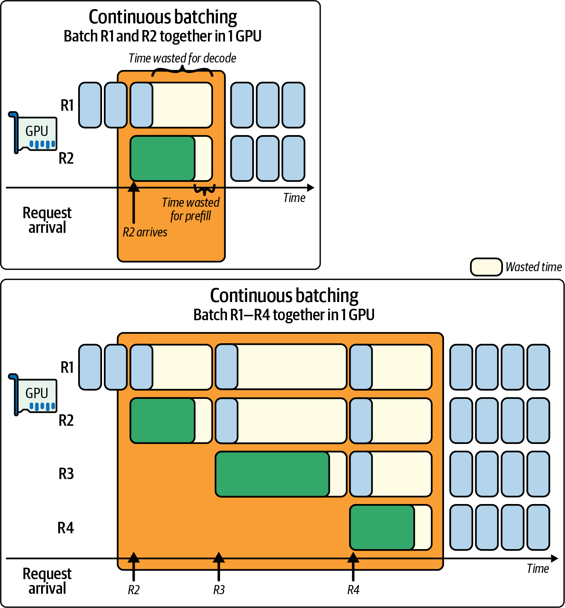
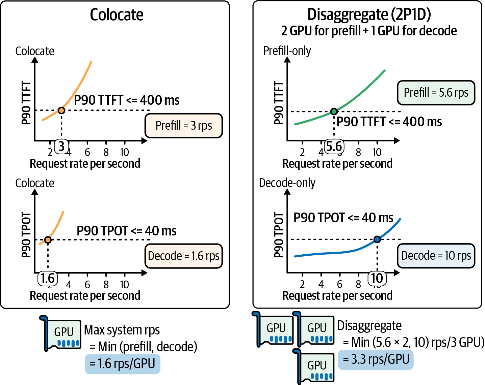
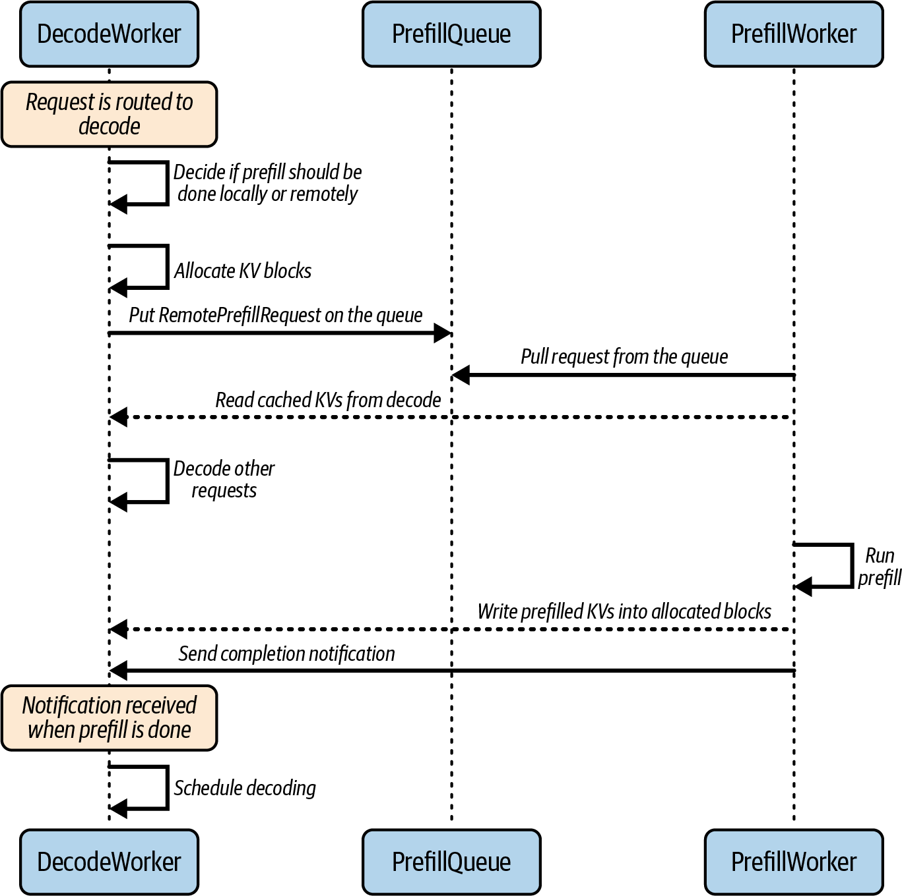
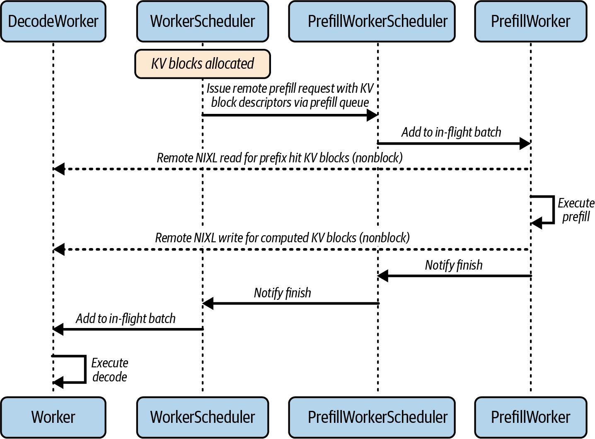
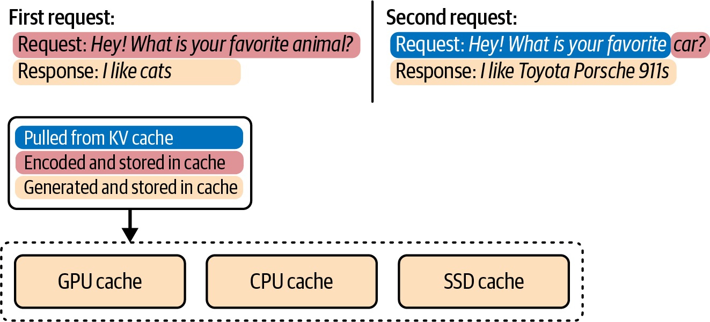
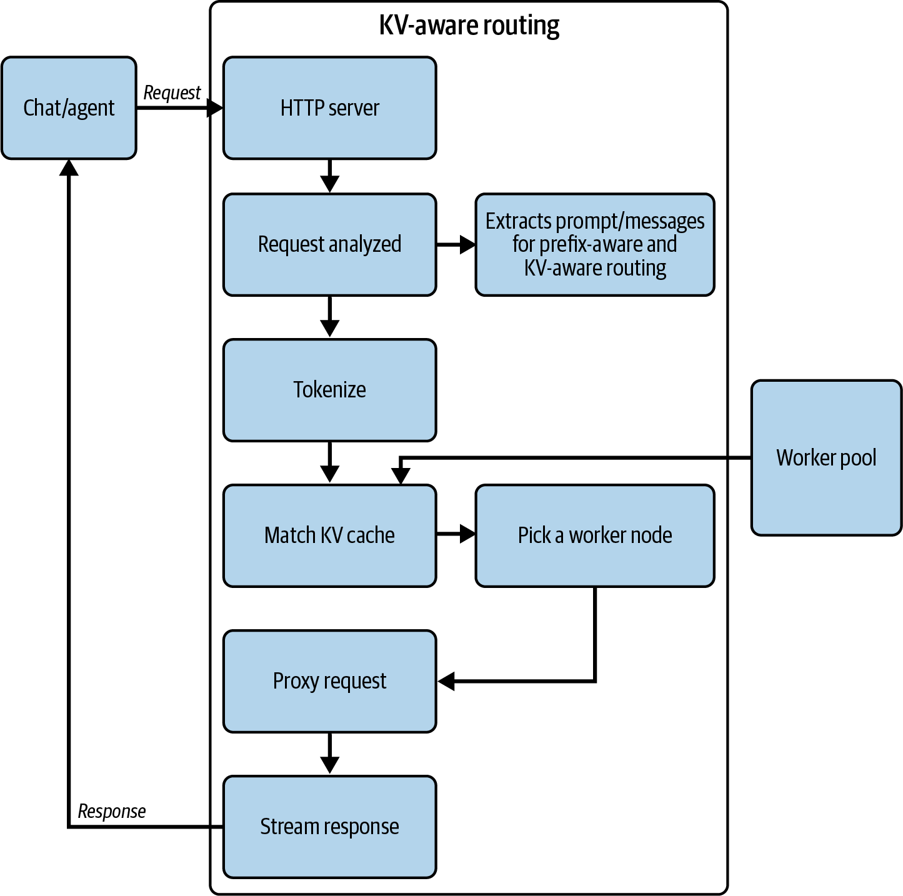
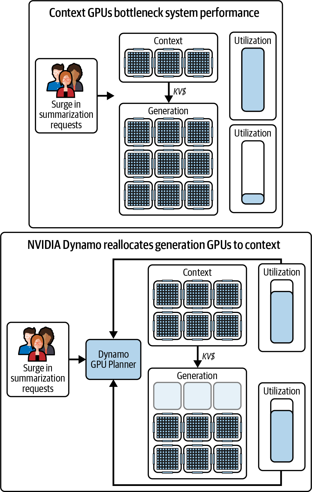

如前文所述，LLM 推理可分为两个不同阶段：预填充阶段和解码阶段。预填充阶段处理输入提示词，为该提示词生成模型内部的键值（KV）缓存；解码阶段则利用这些缓存值逐个生成输出词元——采用推测解码时，也可能一次生成少量词元。
这两个阶段的性能特征有本质差异。预填充阶段受计算能力制约，需要对可能多达数千个词元并行执行大量矩阵乘法，消耗大量浮点运算资源。相比之下，解码阶段通常受内存 I/O 制约：每生成一个词元都要读取庞大的 KV 缓存并写入新值，因而对内存带宽形成压力。简而言之，预填充是高吞吐的并行工作负载，而解码是顺序执行且对延迟敏感的工作负载。
早期 LLM 服务系统把这两个阶段视为在同一套硬件上运行的单体流水线，因此通常通过请求批处理优先追求吞吐量，实际上更偏向预填充阶段。然而，随着交互式应用日益普及，首词元时间（TTFT，即整个提示词的预填充延迟）和每输出词元时间（TPOT，即每个词元的解码延迟）等延迟指标，变得与原始吞吐量同等重要。单个基于 GPU 的推理引擎同时承载两个阶段时，很难同时优化 TTFT 和 TPOT。
把大量请求组成批次可以提高吞吐量，却会恶化 TTFT，因为同一批次中的请求会受到最慢预填充任务的影响；它也会影响 TPOT，因为解码步骤可能排在新提示词的预填充任务之后等待执行。
单体推理系统不得不在两者之间取舍：要么缩短首词元时间，却让后续词元生成变慢；要么提高逐词元吞吐量，却让新请求承受较高的初始延迟。在极端情况下，一个很长的提示词可能长时间占用 GPU，阻塞其他用户的所有提示词预填充任务；而一旦进入解码阶段，逐词元处理又可能无法充分占用 GPU 的计算核心。
为解决这些问题，研究人员和工程师开始探索将两个阶段解耦的方法。关键洞见在于：预填充和解码其实不必运行在同一硬件上，甚至不必使用同一种硬件。
将预填充与解码阶段解耦，是指把它们分配给不同资源，并针对各阶段的需求分别优化。DistServe 论文系统化展示了这种思路：通过消除两个阶段之间的干扰，可以同时满足严格的 TTFT 和 TPOT 延迟要求。
在 DistServe 的特定评测配置中，与未进行预填充—解码解耦的先进基线相比，该系统在严格的延迟服务级别目标（SLO）约束下最多可服务 7.4 倍的请求。此后，一些业界框架开始试验彼此分离的预填充服务器和解码服务器。
开源 vLLM 可结合 LMCache 等组件实现解耦运行。NVIDIA Dynamo 则实现了带动态路由和自动扩缩容的预填充—解码解耦，并公开了部分运行细节。许多服务提供商和开源框架都在实现或评估这种架构。据公开报道，一些大规模服务系统也采用了类似思路来满足严格的延迟 SLO；不过，OpenAI、Meta 和 xAI 等公司的完整生产架构并未公开，具体实现不宜据此断言。总体而言，预填充—解码解耦已成为大规模 LLM 推理的重要架构选择。
在超大规模场景中，大型推理部署可能涉及数十万乃至更多 GPU，并服务数十亿次请求。在这类环境里，解耦架构潜在的成本和性能收益十分可观。
拆分工作负载后，可以分别优化每个阶段，避免一个阶段成为另一个阶段的瓶颈。本章余下内容将探讨如何设计和运行极大规模的预填充—解码解耦推理系统。
本章将介绍在预填充与解码工作节点之间路由请求的调度算法、重负载下维持服务质量（QoS）的技术，以及提高这种分离架构效率的机制。讨论范围涵盖高速互连、专用解码内核，以及为两个阶段采用不同 GPU 类型的异构硬件策略。
现代交互式 LLM 服务通常将 p99（99% 的请求）的 TTFT 目标设为低于 200–300 毫秒。如果不分离预填充工作，这一目标几乎无法保证，因为“一刀切”的 LLM 服务方式会浪费大量潜在性能。
作为参考，MLPerf v5.0（2025）的推理基准测试针对 Llama2 70B（700 亿参数）设定的 p99（第 99 百分位）SLO 目标约为 450 毫秒 TTFT 和 40 毫秒 TPOT；针对 Llama 3.1 405B（4050 亿参数），目标约为 6 秒 TTFT 和 175 毫秒 TPOT。具体而言，这些 SLO 分别是 Llama 2 Chat 70B 和 Llama 3.1 405B Instruct 的 p99 TTFT、p99 TPOT 目标。
设想这样一种情况：一位用户的请求包含数千个词元的超长提示词，而另一位用户的请求只有很短的提示词。如果没有预填充—解码解耦，这两个请求几乎同时到达时，长提示词的预填充计算会长时间占用 GPU。
没有解耦时，第二个请求必须等待很久才能开始解码。这被称为干扰：一个请求的预填充工作拖延了另一个请求的解码工作。图 17-1在连续批处理的背景下展示了预填充与解码之间的这种干扰。
在简单的 FIFO 调度策略下，长提示词会放大所有请求的尾延迟。通常，排在队列前端的长提示词或计算密集型预填充任务，会阻塞后面更短、更轻量的请求。这称为队头阻塞，会导致资源利用率低、延迟异常值增多，并损害用户体验。
在灵活的解耦架构中，可以把大型提示词的预填充任务发送到专用的计算优化型预填充工作节点池；轻量提示词则可以直接发送给解码工作节点，从而绕过预填充节点。这种灵活性使短请求不必遭受队头阻塞，既能最大化总体吞吐量，也能减小延迟尾部效应。

解耦有两个主要优势：减少相互干扰，以及针对阶段分别进行优化。下面分别讨论。
采用解耦后，预填充任务不再与解码任务争用同一设备。忙于生成大量词元的解码工作节点，不会阻止另一位用户的提示词被处理，反之亦然。
为每个阶段分配专用资源，意味着长提示词的计算不会阻塞另一位用户的词元生成，实际效果是延迟更加可预测。图 17-2比较了预填充和解码共置与解耦两种方式。DistServe 论文及其作者后续发布的博客文章对该实验有更详细的说明。

在该实验中，SLO 设为 P90 TTFT 0.4 秒、P90 TPOT 0.04 秒（例如图 17-2中的水平线）。在给定的 TTFT 延迟边界内，共置系统只能达到约每秒 3 个请求（RPS）的有效吞吐量；在给定的 TPOT 延迟边界内，则只能维持 1.6 RPS。因此，共置配置的有效吞吐量只有 1.6 RPS，因为必须同时满足 TTFT 和 TPOT 两项延迟 SLO。
将两个阶段解耦，并分配两个预填充工作节点（两块 GPU）和一个解码工作节点（一块 GPU）后，形成所谓的2P1D 配置。与单 GPU 共置配置相比，预填充和解码工作节点的总体 RPS 都更高：预填充工作节点约达到 5.6 RPS，解码工作节点约达到 10 RPS，分布在三块 GPU 上。因此，2P1D 配置的有效吞吐量为每 GPU 3.3 RPS。
每 GPU 3.3 RPS 的计算方式，是取预填充工作节点总 RPS（5.6 RPS × 2 = 11.2 RPS）与解码工作节点 RPS（10 RPS）中的较小值，即三块 GPU 合计 10 RPS。再除以 GPU 数量 3，得到在所配置 SLO 下的有效吞吐量：10 RPS ÷ 3 GPU = 每 GPU 3.3 RPS。
在这组比较中，解码侧的改进主要影响逐词元延迟，而预填充隔离主要改善首词元时间。只有同时满足两项 SLO，才能计入有效吞吐量。
这种隔离还可以改善尾延迟。经验上，解耦系统的延迟分布更集中，能够避免单体系统中常见的长尾。消除跨阶段干扰后，每个阶段都能更可靠地满足自身 SLO，延迟也更加稳定可预测。
此时还应该问一句：“3 倍成本是否值得换取 2 倍改进？”提出这个问题是合理的。要让方案更具成本效益，还需要进一步调优；不过，这组结果说明了解耦有助于收紧延迟分布并提高有效吞吐量。最终仍需根据具体工作负载作出决定。对于需要达到特定有效吞吐量 RPS 的场景，解耦是常见选项。
阶段特定的优化让每个阶段都能使用最适合自身的硬件和并行策略。例如，预填充阶段受计算能力制约，通常会在高 FLOPS GPU 上提高张量并行度，以发挥峰值 FLOPS。此外，现代 GPU 提供 FP8 和 FP4 等低精度模式，可提升计算密集型预填充阶段的吞吐量。
对于权重，以及经过验证的激活值，也应优先考虑 FP4。许多软件栈采用 FP4 权重和 FP8 激活值。这些低精度格式可以在精度损失很小的情况下最大化吞吐量、减少 HBM 占用；NVIDIA Tensor Core 和 Transformer Engine 等现代软硬件栈均支持这些精度。
相比之下，解码阶段受内存带宽制约，并且会承受跨 GPU 同步开销。因此，解码通常在很少甚至不使用张量并行（常见为 TP=1）时效率最高，同时依赖融合内核提高算术强度，并采用内存吞吐量高的 GPU。
在单体架构中，两个阶段必须共用一种 GPU 类型和一种并行策略，至少会使其中一个阶段处于次优状态。而解耦允许分别调优两个阶段，以获得最大效率。
拆分阶段还为异构集群打开了空间：可以为预填充和解码分配不同 GPU 类型，以优化成本与性能。例如，为提示词预填充使用计算优化型 GPU、为词元生成使用内存优化型 GPU，单位成本吞吐量可能优于同构部署。
实践中，最新一代 GPU 往往同时拥有更高 FLOPS 和更大的显存，因此直接在预填充和解码两侧都使用最新 GPU 很有吸引力，也更为常见。但要注意，异构配置同样是降低成本的可行选择。
本章稍后将进一步讨论异构集群，并展示在大规模场景中为提示词使用高端 GPU、为生成使用更便宜的 GPU 如何节省大量成本。
总之，解耦可以消除跨阶段干扰，并支持分别处理每个阶段。预期结果包括：由于提示词长度不匹配不再造成长尾，延迟分布更加集中；延迟约束下的吞吐量（有效吞吐量）提高；总体资源利用率改善。
应使用性能分析工具（例如 NVIDIA Nsight Systems）识别预填充和解码阶段的瓶颈。这些工具可以跟踪不同工作节点上的 GPU 内核和 RDMA 传输，有助于验证解码内核是否与通信充分重叠。
在解耦部署中，我们维护两个（或更多）工作节点池：一组 GPU 专门处理提示词预填充，另一组专门生成词元。这些工作节点可以位于数据中心内不同的节点或机架上；如果互连速度足够快，也可以位于不同数据中心。（注：为了达到现实可行的 SLO，将预填充和解码保留在同一数据中心内通常更实际。）
工作节点池通过网络通信，把预填充生成的模型 KV 缓存交给负责解码的 GPU。调度器或路由器负责协调这一通信过程。
考虑这样一种配置：模型权重分别加载在两组 GPU 服务器上。一组是预填充工作节点，负责处理提示词并计算 KV 缓存；另一组是解码工作节点，利用预填充工作节点生成的 KV 缓存完成词元生成。
两组工作节点通常通过高速互连（例如 NVLink/NVSwitch 和 InfiniBand）以及基于 RDMA 的 GPU 到 GPU 零拷贝传输进行通信。实际部署可能使用 GPUDirect RDMA 或 UCX；验证端到端行为时，可以在 Nsight Systems 中将这些传输与 CUDA 内核、NVLink 活动、存储指标及 InfiniBand 交换机指标关联起来。
对于基于超级芯片的 NVL 互连网络（例如 Grace-Blackwell、Vera-Rubin 等），可使用 NVIDIA Multi-Node NVLink（MNNVL）；为张量并行解码启用优先使用 NVLink 的集合通信，并在条件允许时为 AllGather 和 ReduceScatter 集合通信启用 SHARP。
系统收到新请求时，通常先由解码工作节点接收。这称为以解码为中心的设计。之所以偏好这种方式，是因为预填充工作节点已经受 KV 计算的算力限制。
让解码工作节点负责客户端 I/O、路由和会话状态管理，可以避免预填充工作节点过载。同时，将请求入口集中到解码节点还能简化网络管理、自动扩缩容和策略执行。
这只是预填充—解码系统架构的一种形式：由解码工作节点作为所有请求的集中入口。NVIDIA Dynamo 推理系统采用了这种架构。另一种常见架构是使用专用的集中式 API 路由器，把请求路由到预填充或解码工作节点。但这会在系统中增加一个组件，还需要路由器与预填充、解码工作节点之间进行额外协调，并带来扩缩容和延迟方面的额外考量。
解码工作节点收到请求后，会决定由自己执行预填充，还是将其“卸载”到预填充工作节点池。如果选择卸载，解码工作节点稍后会接收返回的 KV 结果，然后继续解码并生成下一个词元。
下面是一段简化的 NVIDIA Dynamo 集群配置片段。它定义了两个角色，并使用 NVIDIA Inference Xfer Library（NIXL）执行基于 GPUDirect RDMA 的 KV 缓存传输，使一块 GPU 能通过网络直接写入另一块 GPU 的内存：
roles:-name:prefill_worker# Prefill worker rolemodel_path:models/llm-70binstance_count:4# 4 prefill workersgpu_type:B200# B200 Blackwell compute-bound prefill-name:decode_worker# Decode worker rolemodel_path:models/llm-70binstance_count:8# 8 decode workersgpu_type:B300# B300 Blackwell Ultra high-memory decode
NVIDIA 的 Rubin CPX 加速器也是预填充工作节点的一种选择。Rubin CPX 中的 CP 代表“上下文处理”（context processing），专为预填充这类受计算能力制约的工作负载设计。Rubin CPX 表明 NVIDIA 正从“通用加速计算”GPU 走向专用芯片：针对推理等更广泛 AI 工作负载中的特定阶段（例如预填充）进行优化。
在此配置中，四个预填充工作节点使用 B200 GPU（为计算密集型预填充提供足够算力），八个解码工作节点使用 B300 GPU（为受内存限制的解码提供较大 HBM 容量）。混用 B200 和 B300，有助于匹配两者的 FLOPS 与 HBM 容量特征，同时控制成本。两个角色都使用 NIXL 和 GPUDirect RDMA 传输 KV 缓存块。NIXL 抽象了通过 NVLink 和 RDMA 网卡执行 GPU 到 GPU 数据移动时的传输层；它还提供 GPUDirect Storage 连接器，使 KV 缓存页能够从不同存储层读取或写入。
在底层运行时，每个解码工作节点都会注册一段 GPU 内存，使预填充工作节点可以通过 RDMA 直接写入其中。通常，NIXL 描述符等内存注册元数据会在启动时或首次建立联系时交换。这样，对于每个远程预填充任务，只需发送一个较小的标识符，而不必发送完整的内存地址结构。
例如，Dynamo 使用 etcd 完成工作节点发现和租约管理。工作节点把必要的内存句柄注册到路由器或控制平面，使对等节点能够在需要时获取描述符；预填充工作节点会在首次使用时检索这些描述符。这样，预填充请求只需包含目标 KV 缓冲区的 ID，从而使控制消息保持轻量。
此外，NVIDIA Dynamo 的 NIXL 实现为推理数据移动提供高吞吐 RDMA 和存储抽象，并包含 NVLink、基于 UCX 的互连网络以及 GPUDirect Storage 插件。因此，预填充工作节点可以直接把 KV 块写入解码 GPU 的内存。
在预填充和解码采用不同张量并行布局的混合并行部署中，需要在 NIXL 读取完成后立即在解码侧执行布局转换，使 KV 页符合解码内核预期的布局。与网络传输相比，这一转换的延迟通常可以忽略，并且能够避免重新预填充。
这种架构将两个阶段的扩缩容解耦。例如，如果大量并发长提示词使预填充成为吞吐量瓶颈，就可以增加预填充工作节点，提高提示词处理能力。
如果许多用户生成很长的输出导致解码成为瓶颈，则可以扩展解码工作节点。由于解码和预填充彼此分离，扩展其中一侧不会直接干扰另一侧。
NVIDIA Dynamo 等系统支持运行时动态配置解耦，因此无需停止集群即可随时增删预填充工作节点。新加入的预填充工作节点只需注册，然后开始从队列拉取任务。如果某个预填充工作节点因崩溃、重启、自动扩缩容事件或网络分区等原因离开集群，解码工作节点会暂时执行更多本地预填充来补偿。
NVIDIA Dynamo 的分布式运行时使用 etcd 进行工作节点发现和租约管理。其 Planner 组件可以通过撤销租约或启动能够自动发现的新工作节点来扩缩容。在负载经常波动的超大规模环境中，这种动态灵活性至关重要；发生变化时，可以按需在两种角色之间调换工作节点。
预填充工作节点（也称为提示词服务器）是专门执行请求初始提示词预填充阶段的计算节点。本节讨论如何设计预填充节点以高效处理繁重计算，以及如何在负载下为 KV 缓存填充平衡延迟与吞吐量。
由于预填充工作负载计算密集，预填充节点应使用 FLOPS 较高、适合大型矩阵乘法的 GPU。每个预填充任务都会让 n 个输入词元通过模型的所有层。
预填充工作节点会并行使用数千个 GPU 线程；如果条件允许，还会跨多个 GPU 节点执行。它们使用张量并行、流水线并行等常见并行技术来缩短 TTFT。
从内存角度看，预填充节点需要加载完整模型权重，并为提示词分配 KV 缓存。随后，这些 KV 缓存会被传输到解码工作节点，稍后将看到具体过程。
预填充会把模型参数以及模型对提示词输入执行前向传播时产生的工作激活值装入 GPU 内存。KV 缓存创建后会立即发送给解码工作节点，不会长时间驻留在预填充节点的内存中。
如果模型极大或提示词极长，受内存限制，预填充可能需要在多个 GPU 之间进行张量或流水线切分。为满足延迟目标，预填充服务器应灵活采用数据并行、张量并行、流水线并行、专家并行（MoE）和上下文并行等策略。
一些推理框架会预先分配一大块 GPU 内存，作为预填充的工作空间，从而减少整体内存碎片和缓冲区分配时间。
调优解耦的预填充集群时，必须面对一个基本取舍：在重负载下，是尽量缩短每个提示词的 TTFT，还是最大化总体每秒请求数（RPS），也就是降低 TPOT。
解耦系统通过支持不同调度策略来处理这一取舍，分别对应“延迟优先”和“吞吐量优先”两种方式。下面分别介绍。
为了降低 TTFT，预填充节点应在提示词到达后立即处理，尽量少批处理或不批处理。这样无需等待其他请求凑满一个批次；在集群有可用 GPU 的前提下，每个提示词都能立即开始执行并尽快完成。
延迟优先的缺点是 GPU 利用率较低，因为批次很小甚至没有批次，GPU 可能经常空闲；在集群规模固定时，系统能同时服务的请求也更少。此时可以超额配置预填充集群容量，或使用为 1 的极小批次，以保证请求满足严格的延迟 SLO。
如果首要目标是峰值吞吐量（RPS）和最低 TPOT，就应将提示词组成更大的批次，以充分利用每个 GPU。把 8–32 个提示词累积为一个批次，可以提高算术强度并让 GPU 计算单元保持忙碌，从而提高总体吞吐量。
吞吐量优先的缺点是，每个请求都会产生一段批处理等待时间，至少等于收集完整批次所需的时间；批次越大，等待越久。
在追求极端吞吐量的推理系统配置中，还可以通过数据并行或流水线并行，为每个请求分配多个 GPU。
采用数据并行时，每块 GPU 上都会复制完整模型，批次则被拆成多个微批次分配给各 GPU。每块 GPU 使用自己的完整模型副本，对分得的数据子集执行前向传播，最后汇总所有 GPU 的结果得到最终输出。
数据并行汇聚所有 GPU 的内存带宽和算力，以提高每批次性能。但最大并发请求数会降为“GPU 总数 ÷ 每请求所用 GPU 数”，从而减少系统的总体并发容量。如果单个请求使用过多 GPU，还可能导致部分资源闲置，使吞吐量与并发性失衡。
流水线并行把模型层划分为位于不同 GPU 上的顺序阶段，例如 GPU 0 和 GPU 1。GPU 0 完成微批次 0 对应的阶段后，会立即把激活值转发给 GPU 1，同时开始处理微批次 1 的第一个阶段。这种装配线式模式让各 GPU 同时忙于不同工作片段。
流水线并行可以提高每批次吞吐量，但会增加 GPU 间通信开销；如果微批次大小或阶段划分没有精心平衡，还会产生流水线“气泡”。
归根结底，在集群规模固定时，每增加一块专用于单个请求的 GPU，都会提高该请求的吞吐量，却减少系统同时能够处理的请求数量。虽然可以横向扩展 GPU 集群，但在规模固定的前提下，应根据用例更看重延迟 SLO 还是吞吐量 SLO 来选择配置。
解耦系统会采用前文所述的延迟感知调度策略来平衡这些因素。例如，在负载足够高、合并少量请求又不会违反 TTFT 目标之前，系统可能始终保证单请求执行而不进行批处理。
许多集群设计会在调度器中加入 SLO 约束。例如，如果 p90 TTFT 必须 ≤ X 毫秒，系统就会选择在典型提示词长度下仍能满足该 SLO 的最大批次或并行策略。
另一种策略是自适应批处理窗口。例如，低负载时使用批次大小 1 立即运行请求；负载较高时，允许把 2–10 毫秒等短窗口内到达的请求组成微批次。这样，仅在确有必要且可以容忍时付出少量延迟，换取显著的 GPU 利用率提升。
许多推理引擎在预填充工作节点上偏向延迟优化。系统往往尽快执行提示词任务，甚至容忍一定程度的 GPU 利用不足，因为更快返回首个词元能显著改善用户体验。
常见做法是按照高于平均负载需求的水平配置预填充容量，使预填充集群能够吸收突发提示词流量而不产生延迟尖峰。下一章将讨论动态重新平衡资源的自适应机制，使预填充和解码工作节点都不会逐渐成为瓶颈。
Kubernetes 等现代编排器可以自动扩缩每个层级。例如，如果预填充 GPU 利用率持续偏高而解码侧较低，编排器可以触发自动扩缩容，增加预填充 Pod（或节点），甚至可能移除部分解码 Pod/节点。
这类自适应扩缩容通常借助预填充队列长度等指标来驱动决策。
另一种做法是实现优先级队列：短提示词进入批处理较少的独立快速通道，较长且适合批处理的提示词则进入吞吐量优化队列。NVIDIA Dynamo 在调度中支持延迟类别；也可以通过为请求打标签，并为不同类别设置不同批处理窗口来实现类似机制。
关键在于，预填充工作节点优先追求快速周转。由于解码运行在另一组工作节点上，解耦使我们能够这样做而不损害解码性能。低流量期间可能会“浪费”一些预填充 GPU 周期，却能在流量高峰保持较低 TTFT；对于交互式服务而言，这通常是值得的取舍。
解码工作节点（也称为生成服务器）专门负责自回归解码阶段。提示词的 KV 缓存准备好后，会被发送到解码工作节点；该节点利用 KV 缓存尽快生成剩余输出词元，以维持较低的 TPOT 延迟。
如果请求最初被路由到解码工作节点（如图 17-3所示），它必须先通过解耦路由器决定在本地还是远程执行预填充。如果选择远程预填充，就把预填充请求放入队列，等待预填充工作节点取走。
预填充工作节点持续从预填充队列拉取任务，读取前缀缓存中已有的 KV 块，并执行预填充计算。随后，它把 KV 块写回解码工作节点，由解码工作节点完成解码。

解码工作节点的设计重点，是高效处理大量并发序列生成，同时管理 KV 缓存的内存占用。本节介绍解码服务器如何利用连续批处理和精细的内存管理技术实现高吞吐。这些技术有助于降低 TPOT 延迟并提高可扩展性，尤其适用于长序列。先从两个阶段之间的 KV 缓存传输开始。
高性能解耦要求在预填充与解码工作节点之间尽可能高效地移动 KV 缓存数据。使用 NIXL 等库（见第 4 章）进行直接 GPU 到 GPU 传输，可以避免 CPU 参与并使用非阻塞操作。这样，一块 GPU 传输 KV 数据时，无需等待传输完成，也能服务其他前向传播请求。
考虑一个到达解码工作节点的用户请求。此时，解码工作节点的调度器会分配所需的 KV 块，并把远程预填充请求加入预填充队列。该请求包含这些 KV 块的标识符。图 17-4展示了这一交互过程。

预填充工作节点使用 NIXL，通过选定的传输通道直接读写远程 GPU 内存，从而避免 CPU 拷贝并支持非阻塞推进。预填充工作节点完成请求后，解码工作节点的调度器会立即把对应的解码请求加入自己的解码流水线，使计算与数据移动能够顺畅重叠。应使用预先注册的对等内存和较大的固定窗口，以减少反复注册的开销；可以通过 Nsight Systems 时间线验证零拷贝传输是否与计算重叠。
验证端到端数据移动和重叠时，建议使用带跟踪选项的 Nsight Systems 进行性能分析。对于 InfiniBand 链路遥测，可使用 --nic-metrics=true 收集 HCA/NIC 计数器，并使用 --ib-switch-metrics-device=<GUIDs> 收集交换机计数器。这些选项会采集交换机指标并抽样主机/设备活动，从而得到相互关联的 CUDA 内核、UCX 活动、存储指标和网络行为。下面是一条统一命令，用于启用 CUDA/UCX 跟踪并收集 CPU 活动、GPU 指标、存储指标和 InfiniBand 交换机遥测数据：
nsysprofile--trace=cuda-hw,osrt,nvtx,ucx,gds\--trace-fork-before-exec=true\--cuda-event-trace=true\--cuda-graph-trace=node\--cuda-memory-usage=true\--sample=cpu\--gpu-metrics-device=all\--nic-metrics=true\--ib-switch-metrics-device=<GUIDs>\--storage-metrics--storage-devices=all\--gds-metrics=driver\-onsys_reports/prefill_decode\<your_launch_here>
预填充和解码引擎可能采用不同的并行布局（例如张量并行布局）。此时，系统可以在接收端插入布局转换内核：在 NIXL 读取之后、使用数据之前，将每个 KV 块重新排列为解码工作节点所需的布局。
解码服务器高度依赖连续批处理，也称为迭代级批处理。预填充阶段执行大型矩阵—矩阵计算，而解码阶段的每次新词元生成通常只是较小的向量—矩阵计算，因为单个词元表示为一个向量，所以解码会产生大量小型计算。
为避免逐词元小型工作负载导致 GPU 利用率过低，解码工作节点可以在每次迭代中将多个输入序列组成批次，形成更大的矩阵—矩阵计算（例如并行生成多个词元），从而提高每个解码任务的算术强度。
例如，假设 32 个不同的文本生成请求都处于生成过程中，并准备生成下一个词元。连续批处理调度器不会执行 32 次独立的单词元前向传播，而是将这些请求合并，在一次前向传播中并行生成 32 个词元（每个序列一个）。
这样，矩阵乘法看到的有效批次大小就是 32，GPU 计算单元可以保持繁忙。挑战在于，不是所有序列都会在完全相同的时刻请求词元：有些序列可能较早结束，另一些则可能较晚开始。
请记住，批处理可以跨越不同请求和不同用户。大多数现代推理服务器会在不同用户的序列当时具有相同上下文长度时，自动把它们的解码步骤分组。这相当于在线执行批量解码，可用于最大化解码吞吐量。
在 vLLM 中，CUDA Graph 的捕获范围由 --max-seq-len-to-capture 标志控制。捕获尺寸通常会与最大序列数对齐；当序列超过该长度时，vLLM 会回退到 eager 模式。需要注意，这个标志不控制运行时批处理的序列数量；并发解码槽位数由 --max-num-seqs 控制（即一次迭代中的序列数上限）。应结合 --max-num-batched-tokens 显式设置这些参数，以使内存使用更可预测。
连续批处理通过在每一步动态更新批次大小，解决不同序列在不同时间请求词元的问题。具体而言，每一步都会收集当时已经准备好生成下一个词元的所有序列，并将它们组成一个解码步骤。
如果新请求在解码进行期间完成预填充并准备就绪，就会加入下一个批次，无需等待一段任意长的空闲时间。这与静态批处理不同，后者会先等待收集满一个批次再解码。
如果序列遇到文本结束词元或达到序列长度上限而完成，就会立即从后续批次中移除。如果序列尚未准备好——例如长提示词仍在预填充——则要等它准备好后才会加入。
因此，连续批处理允许每次迭代的批次大小波动。不过，服务器会在上限以内尽量纳入当时可用的序列，以最大化批次大小。这样既能获得较高利用率，又能缩短逐词元等待时间。
连续批处理可以让解码 GPU 工作节点尽量不空闲，始终处理可用请求。即使某些序列正在等待新词元，也能让 GPU 保持忙碌，从而在延迟约束下最大化吞吐量。
类似地，Microsoft DeepSpeed 和 NVIDIA TensorRT-LLM 推理引擎会结合分页式 KV 缓存实现连续批处理或飞行中批处理，以保持解码期间较高的 GPU 利用率。具体来说，DeepSpeed 会合并多个生成请求，TensorRT-LLM 则使用调度器跨不同流分组解码任务。
在解耦的解码集群中，连续批处理的优势会更加明显。由于解码 GPU 只处理生成任务，可以把计算周期专用于这一连续循环，不会被大型定制提示词任务打断，因此吞吐量指标更加平滑，尤其是在负载较高时。
高负载下，一个解码节点可能同时运行几十或几百个序列，并可在每次迭代中将大量序列组成批次，从而最大化硬件利用率。
低负载下，即使只有一个活动序列，解码工作节点也能立即生成词元，无需等待凑满批次。此时 GPU 可能暂时利用不足，但单个序列的延迟仍然较低。因此，连续批处理能够兼顾两种极端：高并发时效率高，低并发时响应快，在高吞吐与低延迟之间取得良好平衡。
在 LLM 推理中处理变长序列，需要谨慎调度和批处理，以免浪费计算与内存。把长短提示词混入同一批次会产生填充开销；在某些工作负载中，填充词元甚至可能占到总词元数的 50%，从而浪费宝贵的 GPU 和网络资源。
将不同长度的提示词组成批次时，每个较短序列都必须填充至最长序列的长度。这会引入不执行实际工作的填充词元，但它们仍会消耗 GPU 周期、内存带宽以及 GPU 间或网络传输资源。在某些生成式 AI 工作负载中，填充可能占全部词元的一半，因此会显著降低推理效率。
一种直接的解决方法是按序列长度将请求分桶，使每个批次包含长度相近的序列。使用 0–512、513–1,024 个词元等静态长度桶，可以固定批次边界并减少填充开销。
vLLM 的解码调度器维护一个轮转的 SequenceGroup 实例池（每个提示词对应一个 SequenceGroup）。每次解码迭代使用固定词元预算推进各组。某个 SequenceGroup 处理完自己的工作块后便离开池，新组随即加入，使流水线持续有工作可做，而不必依赖静态填充桶。
这些批处理和调度技术很适合预填充与解码集群彼此分离的解耦部署。在这种配置下，独立解码节点可以使用连续批处理等技术，在严格 SLO 下减小 TPOT 波动；专用预填充节点则可独立调优，以最大化输入处理吞吐量并缩短 TTFT。
NVIDIA 的程序化依赖启动（PDL）和设备发起的 CUDA Graph 启动（参见第 12 章）可用于减少逐词元启动开销、重叠工作，并减少解码迭代之间的气泡。这些功能通常由框架启用，而不是在应用代码中手动控制。
使用设备启动的图时，应通过 cudaGraphInstantiateFlagDeviceLaunch 实例化，并将节点保留在同一设备上。可以用 PDL 重叠步骤末尾（例如解码迭代末尾）的依赖内核，进一步减少逐词元启动气泡。
通过结合长度分桶、连续批处理、解耦、PDL 和设备发起的 CUDA Graph，vLLM、SGLang 和 NVIDIA Dynamo 等现代推理系统即使面对差异很大的提示词长度，也能兼顾高吞吐与低延迟。实际收益及资源效率仍取决于工作负载、硬件和具体配置。
在 vLLM 中，--max-seq-len-to-capture 控制 CUDA Graph 覆盖的最大序列长度，其默认值在本书所述版本中为 8192。连续批处理时，vLLM 可能填充到最近的已捕获尺寸，因此应协调设置 --max-num-seqs 和 --max-num-batched-tokens，以减少填充浪费。CUDA Graph 有助于避免为常见序列长度反复构建图，但不直接决定运行时批处理行为；后者由解码调度器的动态 SequenceGroup 池管理。生产环境中，建议将上述三个参数结合调优，以限制 HBM 中 KV 缓存的用量，并减少连续批处理的填充开销。
由于解码需要关注到目前为止看到的整个序列，包括此前已经解码的词元，因此 KV 缓存内存是解码工作节点的关键资源。每个序列都要为每个 Transformer 层和每个历史词元存储键、值张量。图 17-5展示了不同请求共享 KV 缓存的一个示例。

对于大型模型和长序列，KV 内存随词元数线性增长，其大小还取决于注意力布局和 dtype。一个实用估算公式是 bytes_per_token = 2 x n_layers x n_kv_heads x head_dim x bytes_per_element。（注：2 x 表示每层、每词元都包含键和值。）
以一个 Llama 类 13B 模型为例：40 层、40 个注意力头（头维度为 128），采用 FP16。对于使用标准多头注意力（MHA）的 4,096 词元上下文，KV 大小约为每词元 0.819 MB，总计约 3.36 GB；采用 FP8 KV 时约为 1.68 GB。
采用分组查询注意力（GQA）且有 8 个 KV 头（n_kv_heads = 8）时，4,096 词元 KV 缓存在 FP16 下约为 0.671 GB，在 FP8 下约为 0.336 GB。采用只有 1 个 KV 头的多查询注意力（MQA）时，FP16 下约为 0.084 GB。
计算时务必使用模型实际的 n_layers、n_kv_heads、head_dim 和 KV 精度，因为 FP8、FP4 会改变 bytes_per_element。
除了模型权重之外，仅 KV 缓存本身就可能使服务大量并发序列的 GPU 很快接近内存上限。因此，应确保解码工作节点使用经过优化的内存分配器，防止大量长序列同时运行时耗尽 GPU 内存。下面介绍解码工作节点高效管理 KV 内存的几种策略。
vLLM 的 PagedAttention 机制是一个典型例子：它把 KV 缓存划分为固定大小的页。具体框架及配置还可以将非活动页换出到 CPU 内存。除 vLLM 外，SGLang 和 NVIDIA TensorRT-LLM 也实现了分页式 KV 内存管理器，NVIDIA Dynamo 则建立在这些技术之上。LMCache 等项目还可利用 DRAM 和 NVMe 构建外部 KV 存储层，并在重计算与 I/O 之间调度，以平衡带宽。
解码服务器通常使用 HBM 容量较大的 GPU（例如配备 180 GB HBM 的 Blackwell B200 和配备 288 GB HBM 的 Blackwell B300）存储 KV 缓存。此外，vLLM 和 NVIDIA TensorRT-LLM 等系统采用优化的内存管理器，以固定大小的页分配 KV 内存，从而减少碎片、支持跨请求复用前缀，并管理大量不同长度的序列。这有助于共享内存并减少碎片和浪费。
GPU 内存接近满载时，解码工作节点可以把较旧的 KV 块卸载到 CPU RAM，或 NVMe 等更冷的存储层。例如，某个序列生成了 1,000 个词元，而这些词元的 KV 并非都需要立即驻留时，可以把部分较早词元的 KV 移到主机内存。
需要时，再按需将其调回 GPU 内存。卸载数据在重新参与注意力计算时会产生延迟，因此应谨慎使用。解码服务器通常会尝试预取数据或将传输与计算重叠，以减轻 KV 数据换入对生成过程的影响。
有些部署会对解码词元数或输出序列长度设置硬上限。这是一种应用层取舍，可以限制 KV 缓存大小，避免其无限增长。KV 压缩也能减少每词元所需内存，例如用较低精度的 FP16、FP8 或 INT8 存储 KV；实际精度损失需针对模型和任务验证。
另一种方法是使用多查询注意力（MQA），让多个查询头共享每个词元的 KV 向量，从而显著缩小 KV 缓存。这属于直接降低 KV 占用的模型架构变化。分组查询注意力（GQA）和 DeepSeek 的多头潜在注意力（MLA）也有助于减小 KV 缓存。
解耦设计的另一个优势是，解码集群的 GPU 内存可以专门用于存储模型权重和 KV 缓存；它不需要同时处理大型提示词预填充计算，而在单体服务系统中，预填充会暂时消耗大量额外内存。
每块解码 GPU 通常都会加载完整模型权重（除非使用模型并行），剩余内存用于存储 KV。例如，GPU 总内存为 180 GB、模型权重占 70 GB 时，理论上约有 110 GB 可用于 KV（实际还需扣除运行时缓冲区等开销）。
这会直接影响该 GPU 能同时容纳的大致“词元数 × 序列数”。解耦并不会消除 KV 内存问题，但通过分离角色，可以选择在内存容量和内存带宽方面更适合解码的节点类型。
在这种集群配置下，需要决定何时把预填充卸载到预填充工作节点池，何时由解码工作节点本地执行。卸载会引入排队、网络传输等开销，因此只有确实有助于降低延迟时才应使用。下一节将介绍负责作出这一决定的路由策略。
并非每个请求都需要卸载到预填充工作节点。没有必要时这样做只会增加开销，收益却很小。因此，解耦推理系统会使用路由策略进行条件解耦，仅在远程预填充可能有帮助时才采用该路径。表 17-1概述了包括 KV 感知和前缀感知在内的路由策略。
| 路由策略 | 说明 |
|---|---|
| Round robin | 依次路由到每个节点 |
| 最少请求 | 路由到活动请求最少的工作节点 |
| 前缀感知 | 使用请求前缀选择工作节点 |
| KV aware | 路由到 KV 缓存与请求最匹配的工作节点 |
解耦路由器会在最初接收新请求的解码工作节点上，对每个新请求运行，并快速决定在本地预填充，还是在预填充工作节点池中远程预填充。
是否把预填充卸载到预填充工作节点池，可依据请求和系统状态的多个因素决定。常见路由因素包括当前队列长度、GPU 内存可用量，以及硬件专门化程度，因为某些 GPU 更适合特定模型或提示词类型。
vLLM 的 KV 缓存感知路由器等高级路由器还会考虑缓存局部性，将请求路由到已经在缓存中持有其部分前缀的解码工作节点。图 17-6展示了一个 KV 缓存感知路由器如何根据工作节点发出的 KV 缓存事件数据，在系统中转发请求。
目标是通过路由最大化缓存命中并平衡负载。表 17-2总结了典型解耦设计中影响路由决策的一些关键因素。
| 因素 | 说明 | 对路由决策的影响 |
|---|---|---|
| 提示词长度 | 输入提示词中的词元数（应用前缀缓存之后）。 | 长提示词意味着更多计算：超过阈值时卸载预填充；短提示词则本地处理。 |
| 前缀缓存命中 | 解码工作节点 KV 缓存中已经存在的提示词部分（来自之前的请求）。 | 前缀命中较大时，预填充实际更短且更偏内存受限，应本地处理；没有命中时，全部是新词元，计算负担较重，卸载可能有益。 |
| 预填充队列长度 | 全局预填充队列中的待处理任务数（反映预填充工作节点的繁忙程度）。 | 队列较长、预填充节点落后时，避免卸载新请求，改在本地处理；队列为空或较短时，预填充节点有容量，满足其他条件即可卸载。 |
| 解码工作节点负载 | 本地解码工作节点当前负载（正在进行的解码任务等）。 | 解码 GPU 忙于许多解码流时，卸载可释放其繁重计算并提升并行性；解码大多空闲而预填充队列积压时，则本地预填充以利用可用容量。 |
| 延迟 SLO 紧迫性 | 请求的优先级或延迟要求的严格程度。 | 紧急低延迟要求时，可卸载以尽快计算提示词，尤其在本地解码繁忙时；要求宽松时可本地运行以节省资源（见“QoS 与提前拒绝策略”）。 |

这些因素会使系统只卸载能够从远程执行中获益的请求，例如长且计算密集的提示词。短提示词和缓存命中的提示词则在本地处理，以减少开销。阈值可以调节。表 17-2中的每个因素都对应一种取舍，下面分别说明。
不应把无关紧要的提示词卸载出去浪费时间。例如，五个词元的提示词即使远程执行开销很小，也不值得卸载，因为解码 GPU 自己很快就能处理。卸载应保留给那些会让解码 GPU 长时间被占用的繁重提示词。
现代推理系统通常实现 KV 缓存，用于保存此前见过的上下文，例如对话早期轮次或重复出现的模板化系统提示词。如果新请求的提示词有很长前缀与已处理提示词重叠，解码工作节点可能已经在内存中保存了该前缀的 KV 数据；此时只需为未命中缓存的剩余部分执行计算。
如果剩余部分很短，卸载的收益就会降低。如果整个提示词都因完整前缀命中而已被缓存，则完全不需要预填充计算，可以直接利用缓存状态解码。路由器会将有效提示词长度视为 prompt_length − prefix_cached_length，从而考虑这一点。
较大的前缀命中不仅减少所需计算，还意味着如果把请求发送到预填充工作节点，就必须来回传输大量 KV 数据，这通常没有意义。因此，这类请求应保留在本地并利用已有缓存。
这个因素本质上衡量预填充工作节点集群的负载。如果大量任务正在等待，预填充工作节点已经不堪重负，再发送一个任务过去可能只会让请求继续排队，TTFT 反而变差。此时应暂时让解码工作节点自行执行更多工作。
这为预填充集群形成了自然的负载卸除机制：专用预填充层达到容量上限时，系统会平滑退化为更多本地计算；预填充队列重新缩短、工作节点追上进度后，则恢复卸载长提示词。这种动态平衡使解耦架构能够适应多种负载条件。
虽然代码不一定总会显式表达这一点，但路由器本身就有助于分散工作负载。如果解码工作节点已经忙于解码许多流，仍可卸载新到达的提示词；否则，该 GPU 必须同时处理繁重计算和解码，可能让两者都变慢。
反过来，如果系统负载很低、解码 GPU 空闲，它们可以在本地处理更长的预填充。实践中，整体负载较低时，空闲解码 GPU 往往也对应较空的预填充队列，现有条件已间接覆盖这种情况；但某些实现也会直接检查本地 GPU 利用率，以决定是否需要卸载预填充。
在混合 SLA 或优先级类别的系统中，可以调整路由来改善 QoS。对于必须获得最快 TTFT 的高优先级请求，可以绕过队列检查并立即卸载，使其尽快开始计算，即使解码 GPU 当前空闲也是如此；这样可把该解码工作节点留给其他高优先级解码任务。
对于低优先级请求，系统也可以完全不使用预填充集群资源，而是在解码工作节点本地执行，甚至推迟处理。“QoS 与提前拒绝策略”一节将再次讨论优先级请求；这里要点在于，基础路由器可以纳入这类因素。
路由策略所用的具体阈值和权重应通过实验确定。例如，在某种 GPU（如 Blackwell B200）上，少于 50 个词元的提示词可能在本地计算更快，而更长提示词则可能从卸载中获益。
随着新硬件发布，阈值也可能变化，因为新 GPU 通常有更高 FLOPS 和更大内存带宽。例如，单块 B200 可以在解码工作节点上处理更多词元，因此卸载的盈亏平衡提示词长度可能提高。
升级硬件后，应根据计算 FLOPS 和内存带宽的变化，通过实测调整 PREFILL_LENGTH_THRESHOLD 等阈值。
有效路由的结果是兼得两方面优势：短提示词在本地运行，TTFT 更快且没有额外开销；长提示词则因预填充和解码在不同 GPU 上并行而受益。同时，预填充工作节点池只在需要时使用，无法跟上负载时也不会继续被大量请求淹没。
这种条件策略是 DistServe 原型以及 vLLM、Dynamo 等现代推理服务器的重要组成部分，使它们能够提高延迟约束下的有效吞吐量（goodput），而不只是原始吞吐量。
实践中，路由策略可以实现为简单的条件检查。下面的代码展示了这种路由逻辑的简化版本：
# Offload prefill decision running on a decode worker# (B200/B300 tuned)defshould_offload_prefill(prompt_length:int,prefix_cached_length:int,prefill_queue_size:int,decode_active_reqs:int,ttft_slo_ms:int=500)->bool:# Effective prefill after prefix KV hitseff_len=max(0,prompt_length-prefix_cached_length)# Tunables (kept in config; shown here for clarity)PREFILL_LENGTH_THRESHOLD=256# see split_policy.prompt_length_thresholdPREFILL_QUEUE_MAX=10# see autoscale/prefill queue-length guidanceDECODE_LOAD_THRESHOLD=8# active decode streamslong_prefill=(eff_len>=PREFILL_LENGTH_THRESHOLD)prefill_available=(prefill_queue_size<PREFILL_QUEUE_MAX)# Prefer remote when prefill is compute-heavy# and the pool has capacity.iflong_prefillandprefill_available:returnTrue# If local decode is busy and prefill is moderately long,# free decode via offload.ifdecode_active_reqs>=DECODE_LOAD_THRESHOLDandeff_len>=64:returnTrue# Otherwise keep prefill local# (lower overhead / better cache locality).returnFalse
在这段伪代码中，PREFILL_LENGTH_THRESHOLD 是通过系统调优得到的参数，例如 50 或 100 个词元，用于定义什么是“长”提示词。PREFILL_QUEUE_MAX 是预填充工作节点池被视为饱和的阈值，表示待处理任务过多。
解码工作节点收到新请求后会立即调用 should_offload_prefill()。如果函数返回 True，解码工作节点就把提示词封装成消息，推送到全局预填充任务队列；等待 KV 缓存结果返回期间，它可以执行其他工作。
如果 should_offload_prefill() 返回 False，解码工作节点会立即自行执行预填充。这样，预填充工作节点开始落后时，新请求就会回退到本地计算，以避免排队延迟。这是一种在解码池与预填充池之间平衡负载的自适应路由。
在生产部署中，路由策略应通过文件或界面配置，而不应硬编码。例如，NVIDIA Dynamo 允许在 JSON 或 YAML 配置中指定复杂的路由和自动扩缩容规则。下面是一个封装部分策略逻辑的简化 Dynamo Planner JSON 示例：
model: ...
split_policy:
prompt_length_threshold: 256
prefix_cache_weight: 10.0
queue_length_weight: 1.5
decode_load_weight: 0.5
enable_hotspot_prevention: true
cache:
reuse_prefix: true
min_cache_hit_ratio: 0.75
autoscale:
prefill:
min_replicas: 4
max_replicas: 12
scale_up: { queue_length: 8, gpu_utilization: 80 }
scale_down: { queue_length: 2, gpu_utilization: 40 }
decode:
min_replicas: 8
max_replicas: 24
scale_up: { queue_length: 16, kv_cache_usage: 75 }
scale_down: { queue_length: 4, kv_cache_usage: 30 }
qos:
enable_early_rejection: true
low_priority_threshold_ms: 500
reject_on_slo_violation: true
该配置定义了一个 split_policy，其 prompt_length_threshold 为 256 个词元；还为缓存命中、队列长度、解码负载等因素指定权重，并为预填充和解码角色配置 autoscale 行为，包括根据队列长度、GPU 利用率和 KV 缓存使用量扩容或缩容。
此外，还可以应用提前拒绝等 QoS 规则，并调节将请求视为“慢请求”的阈值。实践中，Dynamo 路由器会在启动时读取该 JSON，或动态获取它，用于指导整个集群中各请求的路由决策。
如前一节所述，NVIDIA Dynamo 支持动态路由策略。Dynamo GPU Planner 是这种能力的一种实现。Planner 使用 TTFT、TPOT 和 KV 缓存传输预计成本等指标，决定是否修改路由，甚至重新分配或扩展不同阶段的 GPU，以减少瓶颈并适应工作负载变化。如图 17-7所示，这有助于系统在需求激增时维持较高性能。

这里，Dynamo 的 Planner 选择把更多 GPU 调配到预填充（上下文）阶段，因为大量摘要请求涌入：相对于解码（较短的摘要输出），它们需要大量预填充（较大的输入）。
相反，如果推理型请求大量涌入，Planner 可以把更多 GPU 重新分配给解码阶段，因为这类请求相对于输入词元往往会生成大量输出词元。在其他情况下，Planner 也可能选择传统单体方式，让预填充与解码在同一 GPU 工作节点上完成。
简而言之，NVIDIA Dynamo Planner 这类组件可以持续监控实时指标，并将其与 TTFT、TPOT 等应用层 SLO 对比，从而自动化这一决策过程。Planner 可以动态决定采用完全解耦、完全不解耦，还是介于两者之间的方案，并为预填充和解码阶段分配不同数量的 GPU；实际效果取决于部署和工作负载。
推理路由器可以超越简单阈值规则，使用更复杂的延迟评分模型为每个请求选择最佳工作节点。例如，它可以根据工作节点繁忙程度、内存使用量、是否存在相关缓存等实时指标，持续计算每个候选节点的延迟成本，然后将请求发送给延迟成本最低的节点。
假设延迟成本最低的工作节点最空闲、也最值得优先选择。一个简单的延迟成本函数如下所示：
# Lower cost is preferablelatency_cost=0.7*(occupancy_percent)+0.3*(active_req_count)
这个延迟成本函数更重视 GPU 占用率，因为它反映 GPU 当前正在处理多少工作；其次考虑该引擎当前正在处理的请求数。新请求会发送到延迟成本最低的引擎。
示例中的 0.7 和 0.3 权重可以根据实测数据调优。如果 KV 内存使用量因为大量换入换出或更高内存带宽占用而成为减速的重要预测因素，就应提高它的权重。
更先进的路由策略还可以纳入其他因素，例如将下面这些因素加入延迟成本函数：
如果工作节点的缓存中已有所需前缀 KV，即发生前缀命中，那么它可以更快地服务请求。此时可以分配较大的负权重来降低延迟成本并优先选择该节点，因为在这里成本越低越好。
更高的内存使用量意味着 GPU 更繁忙。系统会分配正权重来提高延迟成本，促使路由器避开该节点，因为此场景更偏好较低成本。
并行请求越多，潜在的上下文切换开销越大，因此应增加延迟成本，避免选择该节点。
如果 GPU 正因处理许多长序列而大量占用内存带宽，再增加工作只会使系统变慢。这应提高延迟成本，降低选择该节点的倾向。
如果某个工作引擎最近使用过完全相同的前缀，缓存处于“热”状态，那么 KV 可能仍在 L2 缓存中，或正从预填充工作节点传来，因此可能改善性能。此时可以加入小的负权重，降低延迟成本并优先选择最近见过该前缀的节点。
表 17-3总结了这种高级路由策略配置，列出若干因素及其示例成本。
| 因素 | 含义 | 对延迟成本的影响 |
|---|---|---|
| KV 占用率（%） ( occupancy_percent) |
越高表示内存压力越大 | +3 |
| 活动请求数 ( active_req_count) |
正在处理的请求越多，潜在排队越严重 | +1 |
| KV 缓存匹配 ( cache_match_flag) |
引擎已经拥有所需的前缀 KV | −10（较大的负值） |
| 内存带宽占用率（%） ( mem_bw_percent) |
越高表示内存总线越繁忙 | +0.5 |
| 近期 KV 使用 ( recent_prefix_flag) |
该引擎最近使用过这个前缀 | −1 |
现在将这些额外指标加入延迟成本计算。路由器会计算如下复合延迟成本：
# Lower cost is preferabledeflatency_cost(occupancy_percent:float,active_reqs:int,cache_match_flag:bool,mem_bw_percent:float,recent_prefix_flag:bool)->float:return(3.0*occupancy_percent+1.0*active_reqs-10.0*int(cache_match_flag)+0.5*mem_bw_percent-1.0*int(recent_prefix_flag))
预填充集群和解码集群甚至可以使用略有不同的公式。对于预填充，缓存命中（例如前缀已经计算完成）可能更值得纳入；对于解码，内存带宽或可用 KV 空间可能更主导决策。
路由器需要从每个工作节点获取遥测数据，包括等待队列长度、KV 缓存使用量、内存利用率等指标，以便持续更新延迟成本。
这样，系统可以动态地把流量路由到对延迟影响最小的位置。低负载下所有工作节点的分数都较低，选择哪个节点可能并不重要，因为任何节点都能快速处理请求。
高负载下，路由器会把新工作发送给最空闲的节点，从而实现负载均衡；同时利用数据局部性（缓存命中）减少工作量，因此平均延迟和尾延迟都能降低。
如果某台服务器缓存了相关数据，即使它稍微繁忙一些，路由器仍可能选择它，从而更快服务该请求。评分函数定量刻画了这一取舍。
NVIDIA Dynamo 执行类似但方向相反的计算：分数越高越好。它会计算远程预填充分数；如果分数超过阈值，就把任务卸载到预填充工作节点池。下面的 YAML 片段配置了条件解耦：只有计算分数高于可配置的 remote_prefill_min_score 时才执行远程预填充。
disaggregated_router:enable:truepolicies:-metric:prefill_length# Prompt length after prefix cache hitthreshold:256action:prefer_remote# if prompt > 256 tokens, offload prefillweight:0.7-metric:prefill_queue_depth# requests queued for prefill workersthreshold:10action:prefer_local# if queue > 10, lean toward prefill locallyweight:0.3remote_prefill_min_score:0.5# overall threshold decide remote prefill
这里，路由器根据 prefill_length 和 prefill_queue_depth 计算分数。如果提示词超过 256 个词元，就投票选择 prefill_remote 并卸载预填充；这部分计算的权重为 0.7。
但如果预填充队列很深，等待任务超过这里配置的 10 个，就会以 0.3 的权重投票选择 prefill_local。如果合并分数高于 remote_prefill_min_score（本例为 0.5），Dynamo 就会卸载预填充；否则保留本地预填充，不执行卸载。
如第 15 章所述，一些先进推理服务器支持推测解码。推测解码会并行生成多个词元分支，并丢弃不够理想的分支。
推测解码虽然不是解耦本身的组成部分，却可以叠加在路由器的决策流程之上。例如，系统检测到某个推测分支不确定时，可以把多个推测请求并行发送给不同解码工作节点，生成多个候选的下一词元分支，以掩盖词元分支生成的不确定性。对于分支不可预测的生成任务，这相当于用额外计算换取更低延迟。
如果实现这种机制，路由器需要协调推测任务并合并结果。必须限制资源使用，避免压垮集群。多路径推理可以作为极端延迟敏感推理的潜在优化，但代价是额外消耗可能被浪费的计算和内存带宽资源。
总之，延迟感知路由器会同时考虑当前负载和缓存复用等潜在加速因素，把每个请求发送到合适的位置。它相当于分布式服务系统的大脑，与每块 GPU 上的底层调度协同工作；结合全局扩缩容和 KV 缓存策略，可以最大化有效吞吐量并降低延迟。
QoS 策略会对某些请求提高优先级或进行限流，以满足延迟目标。提前拒绝也称为准入控制，系统饱和时可以拒绝低优先级查询，从而为其他请求保留资源并维护其延迟等 SLO。
现代系统通常依据队列等待时间阈值执行这一策略。例如，如果请求在队列中等待时间超过 X 毫秒，与其让它严重违反 SLO，不如拒绝请求或将其卸载到低等级服务。这类 QoS 防护机制在任务关键型推理系统中越来越常见。
在超大规模推理系统中，需要通过 QoS 机制在重负载下维持尾延迟保证。即使解耦集群经过优化，只要负载超过容量，请求仍会开始排队，延迟也会升高。
设计良好的系统不会任由所有请求都违反延迟 SLO，而会选择平滑卸除负载。当某些请求显然会破坏其他请求的延迟保证时，可以拒绝或推迟它们，尤其是低优先级请求。
这类似于 Web 服务器在极端负载下返回HTTP 503“过载”错误。对于 LLM 服务，如果无法保证及时处理，可以主动拒绝请求或降低服务规格。下面介绍预填充—解码解耦场景中的几个 QoS 组成部分。
系统应了解目标 TTFT 和 TPOT。例如，99% 的请求必须在 200 毫秒内返回首个词元。每个解码工作节点可以利用内部遥测数据，根据当前队列长度等信息，估算立即接受新请求时的 TTFT；也可以估算再增加一个解码流后的 TPOT。
在完全接受并分配请求之前，系统可以检查接纳该请求是否会导致过载或违反 SLO。如果会，就立即以“服务器繁忙，请稍后再试”之类的响应拒绝请求，这称为提前拒绝。实践中，可以依据全局系统负载视图，也可以使用单个节点的启发式规则触发提前拒绝。
例如，公共 API 可能会在积压过高时返回错误，而不是继续接受请求并严重违反服务目标。有些提供商会在负载高峰动态降低最大生成长度，本质上是在回答完整性与延迟之间取舍。
请求并非同等重要。来自付费客户或关键服务的请求可能优先级较高，免费层用户或后台作业的请求可能较低。系统可以把优先级纳入调度决策：解码调度器可以先服务高优先级任务，预填充任务队列也可按优先级排序。系统繁忙时，低优先级任务可能等待更久，或被快速拒绝，以让位给高优先级任务。
系统开始过载时，可以不直接拒绝请求，而是降低较不重要请求的服务规格。例如，改用较小模型、截断提示词或限制输出词元数。一种简单做法是在高负载期间临时降低低等级请求允许的最大提示词长度或输出长度。
在解耦场景中，一种有趣的平滑降级方式是在系统承压时，暂时关闭低优先级请求的远程预填充。由于远程预填充会额外占用集群资源来优化延迟，可以让低优先级查询仅在解码工作节点本地执行预填充，只使用解码资源。这样这些请求的响应会变慢，却能为高优先级查询释放预填充工作节点。
例如，推理服务器可以为每个请求标记优先级；当预填充工作节点正忙于处理高优先级任务时，让路由器对低优先级请求忽略 should_offload_prefill 逻辑。
下面是一个提前拒绝策略示例。它可以在每个解码工作节点处理请求之前运行，也可以在更上游的 LLM 网关执行：
# Early rejection based on estimated latency and priorityfromdataclassesimportdataclassclassQoSController:def__init__(self,ttft_slo_ms:int=500):self.ttft_slo_ms=ttft_slo_msdefadmit_request(self,priority:str)->bool:# The queue length and per-request averages are fed by the metrics systemest_ttft=(get_current_prefill_queue_length()*get_avg_prefill_time_per_req()+get_current_decode_queue_length()*get_avg_decode_time_per_req())ifest_ttft>self.ttft_slo_msandpriority.lower()=="low":# reject low priority request to protect SLOsreturnFalsereturnTrue
这里通过预填充队列中的任务数估算 TTFT，因为每个任务都会增加一些延迟，同时考虑前方已有的解码任务数。请注意，解码任务通常会重叠，因此这只是粗略估计。如果估算 TTFT 超过允许的最大值（即 SLO），对于低优先级请求就拒绝它，并让 should_offload_prefill 函数返回 False。
对于高优先级请求，仍然接受它，必要时牺牲一些其他排队工作。更复杂的做法是抢占已经排队的低优先级请求，为新的高优先级请求腾出空间；这通常通过为每个优先级维护独立队列实现。
进一步看，前例中的 avg_prefill_time_per_req() 和 avg_decode_time_per_req() 函数会使用观测到的每请求预填充和解码时长的指数移动平均，动态计算这些值。它们分别按提示词词元数（预填充）和生成词元数（解码）归一化；对于长度不同的输入，引擎会将每词元平均值乘以该请求的实际词元数进行外推。
get_current_prefill_queue_length() 和 get_current_decode_queue_length() 函数获取调度器内部队列跟踪的待处理预填充与解码任务数量。这些值由调度器维护。
这些逐词元时间估计会通过调度器循环实时刷新；默认情况下，调度器每秒从 /metrics 端点更新一次，从而捕获动态工作负载变化。
提前拒绝和优先级调度可以确保系统接近饱和时以可控方式失败，而不是崩溃。最重要请求的用户仍能在规定 SLO 内获得服务，同时卸除较不重要的流量。
许多生产部署需要与 LLM 网关层协调实现这一机制。网关可以向客户端返回特定错误码，或返回表示服务器过载的代码。关键是系统应保持在能够兑现已接受工作延迟承诺的状态，而不是过度接纳请求，导致所有请求都错过 SLO。
QoS 的另一个考虑是自适应生成上限。如果解码阶段可能运行过久并导致 TPOT SLO 违规，系统可以提前截断生成。例如，用户请求生成 1,000 个词元，但系统承压时，可能只允许生成 200 个词元，然后停止，为其他请求释放资源。QoS 策略通过提高优先级或限流满足延迟目标；系统饱和时，提前拒绝可以拒绝低优先级查询，以维护其他请求的 SLA。
总之，解耦可以减少固有干扰，但流量尖峰仍可能压垮任何固定容量。QoS 机制通过确保架构兑现延迟承诺来补充解耦；提前拒绝会拒绝或降低部分工作的优先级，以保护其余请求的延迟。
可扩展性的另一个方面，是增加节点后性能能保持到什么程度。解耦方法在许多方面可以实现近似线性扩展：可以增加预填充节点来处理更多提示词吞吐量，也可以增加解码节点来处理更多词元生成吞吐量。实际扩展效率仍会受到网络、调度和负载分布等因素影响。
主要挑战在于平衡两者。规模越大，自适应调度器越重要，因为流量模式变化等失衡情况在大型系统中更容易发生。动态比例配置允许集群在运行中重新平衡预填充与解码的资源比例。
另一个考虑因素是多模型服务。如果多个模型的解码特性相近，解耦可以让它们共享解码能力。例如，模型 A 和模型 B 部署在同一集群时，可以让一部分解码工作节点处理两种模型。这在托管复用同一基础模型架构的不同 LoRA 适配器时尤其有用。
这样可以构建灵活的多租户、多模型、预填充—解码解耦推理服务器系统。虽然具体设计超出本章范围，但解耦的模块化确实提供了这种灵活性：多个模型可共享一个解码池，同时各自拥有预填充前端。
最后考察超大系统中的尾延迟。推理系统扩展到数千乃至更多 GPU 节点时，控制尾延迟会越来越困难，因为服务器越多，出现慢节点或故障节点的概率越高。
解耦在这里也能有所帮助：将预填充任务与解码任务隔离在不同节点上，某一侧的慢节点就不会大幅影响另一侧的任务。
本章讨论的提前拒绝、两级调度和 KV 缓存复用等技术，有助于缓解拖尾节点的影响。例如，缓存请求上下文的大部分内容后，一次慢操作不太会拖慢整个生成过程，因为许多计算已经完成。
总之，经过恰当配置和调优后，解耦系统在大规模下通常更具韧性。消除一种干扰因素并引入适应能力，能够改善尾延迟分布，至少可使其随负载增长而恶化得更慢；具体结果仍取决于工作负载、容量规划和故障处理机制。
本章涵盖的技术，从 KV 缓存高速 RDMA 传输到动态路由算法和 QoS 策略，都是大规模生产推理工作负载的重要组成部分。以下是关键要点：
分离预填充与解码阶段可以减少干扰和队头阻塞，避免长提示词拖延较短提示词，从而收紧延迟分布；这也有助于每个阶段更可靠地满足自身延迟 SLO。
预填充（提示词处理）受计算能力制约，受益于高并行度和高 FLOPS，通常可借助高算力 GPU 及 FP8/FP4 等低精度技术缩短 TTFT。解码（词元生成）受内存限制，受益于高内存带宽 GPU 和连续批处理等技术，以提高逐词元吞吐量。解耦允许两个阶段使用不同硬件和并行配置，而固定的“一刀切”配置难以同时做到这一点。
使用 KV 缓存避免重复预填充计算是常见做法。智能路由器可以决定新请求是卸载到预填充工作节点，还是直接由解码工作节点处理；路由策略应考虑提示词长度、缓存命中和集群负载。
vLLM、SGLang 和 NVIDIA Dynamo 等现代推理服务器可使用多因素评分算法路由预填充与解码请求，以提高吞吐量并维持适当延迟。许多框架在调度器和仪表盘中也将 TPOT 称为词元间延迟（ITL）。建议分别跟踪预填充与解码节点的 TTFT（p50/p95/p99）和 ITL/TPOT（p50/p95/p99），以便在升级期间更容易调试性能回退。例如，当预填充服务器饱和或提示词很短时，可以跳过远程预填充。
重负载下应实施准入控制和优先级调度。与其让所有请求的延迟失控，不如快速拒绝超额或低优先级请求。实际系统可以返回“繁忙”错误或降低响应长度来实现提前拒绝，以保护指定阈值下的第 99 百分位延迟。解耦与 QoS 结合可降低过载级联风险，具体效果取决于容量与策略配置。
预填充—解码解耦已成为现代大规模 LLM 推理中常见的架构选择。Meta、Amazon、NVIDIA、Google 和 OpenAI 等主要 AI 提供商都公开讨论过或提供过与这种思路相关的技术；但完整生产部署架构通常并未公开。
虽然大多数公司不会公布完整生产架构，但已有许多开源实现，例如 vLLM、SGLang 和 NVIDIA 的 Dynamo，展示了这种方法及其潜在收益。与单体设计相比，解耦的预填充—解码架构可在合适的模型、硬件和负载条件下实现更高有效吞吐量（延迟约束下的有用吞吐量）和更好的成本效率。
下一章将继续探讨如何结合现代 GPU 和网络硬件，以及更先进的调度与缓存优化，为超大模型 LLM 服务更多用户，同时控制延迟和成本。